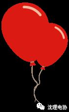
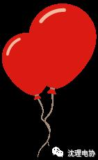
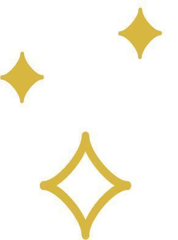

冬至到啦！
点击上方蓝字关注“公众号”

沈阳理工大学电子技术与应用协会

12
月
21
日

周
三
冬至来了
冬至（Winter Solstice）又名‘一阳生’，是中国农历中一个重要的节气，也是中华民族的一个传统节日，冬至俗称“数九、冬节”、“长至节”、“亚岁”等。早在二千五百多年前的春秋时代，中国就已经用土圭观测太阳，测定出了冬至，它是二十四节气中最早制订出的一个，时间在每年的公历12月21日~23日之间。
冬
至这一天北方有传统的习俗——吃饺子，大家知道这一习俗的由来么？
吃饺子
谚云：“十月一，冬至到，家家户户吃水饺。”这种习俗，是因纪念“医圣”张仲景冬至舍药留下的。
张仲景是南阳西鄂人，他著《伤寒杂病论》，集医家之大成，祛寒娇耳汤被历代医者奉为经典。张仲景有名言：“进则救世，退则救民;不能为良相，亦当为良医。”
东汉时他曾任长沙太守，访病施药，大堂行医。后毅然辞官回乡，为乡邻治病.其返乡之时，正是冬季。他看到白河两岸乡亲面黄肌瘦，饥寒交迫，不少人的耳朵都冻烂了。便让其弟子在南阳东关搭起医棚，支起大锅，在冬至那天舍“”医治冻疮。他把羊肉和一些驱寒药材放在锅里熬煮，然后将羊肉、药物捞出来切碎，用面包成耳朵样的“娇耳”，煮熟后，分给来求药的人每人两只“娇耳”，一大碗肉汤。
人们吃了“娇耳”，喝了“祛寒汤”，浑身暖和，两耳发热，冻伤的耳朵都治好了。后人学着“娇耳”的样子，包成食物，也叫“饺子”或“扁食”。
冬至吃饺子，是不忘“医圣”张仲景“祛寒娇耳汤”之恩。至今南阳仍有“冬至不端饺子碗，冻掉耳朵没人管”的民谣。
在大学的你们
今天吃饺子了么？

编辑：王喆

长按识别二维码
关注“公众号”



点击阅读原文查看更多